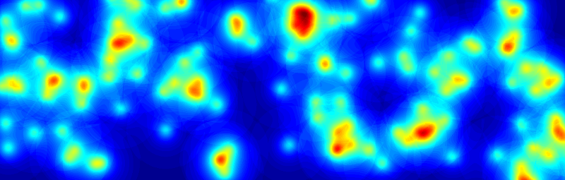
Next: Blog posts 2023 Up: Blog posts 2026 Previous: Blog posts 2026 Contents
The clear trend is that artificial intelligence (AI) and machine learning (ML) are current hot topics, particularly in wireless networks and signal processing. Another active research topic is stochastic geometry (SG). In this regard, some perceive SG and ML as competitors, suggesting ML has surpassed SG in practical impact. However, this comparison is a poor perspective and not the only way to look at it. The ongoing SG research remains valuable, beyond being an academic exercise. SG can and will be utilized in modern ML by providing models and, further, hypothesis classes of models for ML algorithms. In this post, I will introduce some of the most recent advancements in SG modeling of satellite communication systems and provide a concrete example of its application in ML.
For instance, SG models can be integrated as a hypothesis class in the learning process of ML.— Yassine H Mamouche et al., [1].
Let me formulate the working definitions of the ML and SG. We focus on the signal processing of wireless networks, particularly interference modeling.
The landscape of ML algorithms is vast; however, they are often based on Gaussian process regression (GPR). GPR is a signal prediction method that relies on estimating the signal from a set of samples (or observations) and a correlation function. More specifically, an autocovariance function (also referred to as a kernel) is at the heart of GPR. The autocovariance function can be arbitrary, and it should be carefully chosen to get meaningful results. One way is to numerically estimate the autocovariance from training data. Whether the training data is empirical data from an actual system or generated synthetically using simulation tools, numerical statistical estimates lack generality and physical insight and have a concomitant dependence on local, empirical data and circumstances. How to interpret such data if we don't have understand what qualities we are looking for? It is time for the SG to step into the arena: A comprehensive, tractable, and solid wireless network SG system model provides ML models that guide us effectively in inferring patterns from empirical data.
We will demonstrate an example of estimating the power of a non-stationary Gaussian interference signal at a low Earth orbit (LEO) satellite receiver. The estimation is based on the GPR and a theoretical SG model of the interference power distribution and its autocovariance function. The results are compared with a moving average (MA).
The theoretical settings are
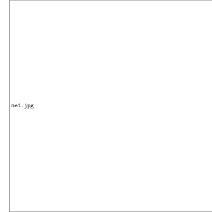
kHz are distributed according to the Poisson point process (PPP) on the Earth surface with a density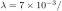
km , causing interference at the LEO satellite. Each interferer transmits at power
, causing interference at the LEO satellite. Each interferer transmits at power 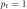
.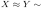
dB beamwidth rad steered towards the Earth center. This means the beam center elevation angle w.r.t. the satellite is
rad steered towards the Earth center. This means the beam center elevation angle w.r.t. the satellite is
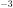
rad. km moving at its orbital speed
km moving at its orbital speed
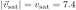
km/s.
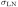
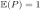
is a zero-mean Gaussian waveform with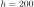
, which is modulated by the power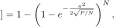
(see [2], Section 3.4).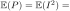
) is approximately gamma distributed with the mean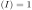
and the variance var (see [4], Eqs. (18), (19) and (29)).
(see [4], Eqs. (18), (19) and (29)).
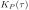
at lag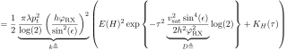
has the Gaussian form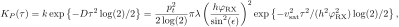 |
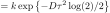 |
||
 |
(2) |
 are constant parameters that depend on
are constant parameters that depend on
 ,
,  ,
, 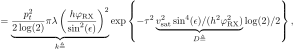
, ,
,
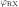
and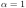
(see [4], Eq. (21)).
For our satellite settings 2-3, theoretically,
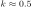 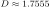
If left unfixed, 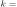 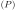 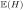 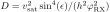 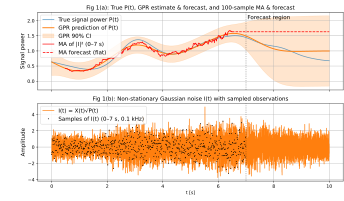 ,
yields overfitting
and underfitting, respectively.
,
yields overfitting
and underfitting, respectively.
In Figures 1 (a) and (b), we estimate from a sampled ( 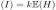 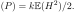 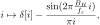 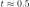 to estimate the interference power . Each sample
to estimate the interference power . Each sample  , where
, where
 is set to the expected variance of . The MA window size is empirically optimized, and apart from the slight overfitting, the MA captures reasonably well. The GPR prediction clearly captures the smoothness of better. Furthermore, the GPR prediction captures from
is set to the expected variance of . The MA window size is empirically optimized, and apart from the slight overfitting, the MA captures reasonably well. The GPR prediction clearly captures the smoothness of better. Furthermore, the GPR prediction captures from  s. The forecast
region in the figure corresponds to a causal estimation of the future signal based on the past values. Both predictions improve as the sampling frequency is increased.
s. The forecast
region in the figure corresponds to a causal estimation of the future signal based on the past values. Both predictions improve as the sampling frequency is increased.
This was a simple hands-on demonstration of how SG is utilized in ML satellite communication models.
The following Python code generates the plots. (Written with the help of ChatGPT.)
import numpy as np
import matplotlib.pyplot as plt
from scipy.stats import norm, gamma
from scipy.linalg import cholesky
from numpy.linalg import solve
# === Parameters ===
T_total = 10.0 # simulate P(t), I(t)
T_obs = 7.0 # "observation" time
dt = 0.001 # fine time step for continuous path
t = np.arange(0, T_total, dt)
N = len(t)
fs_sample = 100.0 # sampling of |I|^2
sample_interval = 1.0 / fs_sample
# indices of sampled points up to T_obs
indices = np.arange(0, int(T_obs / dt), int(sample_interval / dt))
t_sampled = t[indices]
# Gamma marginal for P(t): mean=1, var=1/2 -> Gamma(k=2, theta=0.5)
k_shape = 2.0
theta_scale = 0.5
mean_P = 1.0
# === 1. Construct latent Gaussian process for P(t) with covariance C(τ) = k * exp(-D τ^2 log(2) / 2) ===
tau_full = t[:, None] - t[None, :]
k_emp = 0.5
D_emp = 1.7555
C_full = k_emp * np.exp(-D_emp * tau_full**2 * np.log(2) / 2)
# numerical jitter for Cholesky
jitter = 1e-10
C_full += jitter * np.eye(N)
L = cholesky(C_full, lower=True)
# latent Gaussian process
z_latent = L @ np.random.randn(N)
# Gaussian copula to get Gamma process P(t)
u = norm.cdf(z_latent)
P = gamma.ppf(u, a=k_shape, scale=theta_scale)
# === 2. Generate I(t) = X(t)*sqrt(P(t)) ===
X = np.random.randn(N)
I = X * np.sqrt(P)
# # === 3. Sample I and form |I|^2 on [0, T_obs] at 0.1 kHz ===
I_sampled = I[indices]
power_sampled = np.abs(I_sampled)**2 # z_i = |I(t_i)|^2
# # === 4. 100-sample moving average on sampled powers (0..T_obs) ===
window_size = 100
kernel = np.ones(window_size) / window_size
power_ma = np.convolve(power_sampled, kernel, mode='valid')
# time axis for centered MA
if window_size > 1:
t_ma = t_sampled[(window_size-1)//2 : -(window_size//2)]
else:
t_ma = t_sampled
# Simple MA "forecast": extend last MA value flat from last t_ma to T_total
t_ma_forecast = np.arange(t_ma[-1], T_total + 1e-9, sample_interval) # 0.1 kHz grid to end
power_ma_forecast = np.full_like(t_ma_forecast, power_ma[-1])
# Approximate noise variance for |I|^2
# Var(|I|^2 | P=p) = 2 p^2, E[P^2]=1.5 => average Var ≈ 3
noise_var = 3.0
# Variance of 300-sample MA under iid noise with var=noise_var
ma_var = noise_var / window_size
ma_std = np.sqrt(ma_var)
# === 5. GPR prediction of P(t) on from noisy power samples ===
# GP prior: P ~ GP(mean=mean_P, cov(t,s) = 0.5*exp(-3(t-s)^2))
# Observations: z_i = |I(t_i)|^2 ≈ P(t_i) + N(0, noise_var)
# training times (sampled up to T_obs)
t_train = t_sampled
z_train = power_sampled
# Covariance among training points
tau_ss = t_train[:, None] - t_train[None, :]
k_prior = 0.5
D_prior = 1.7555
C_ss = k_prior * np.exp(-D_prior * tau_ss**2 * np.log(2) / 2)
# Covariance between all times (0..T_total) and training points
tau_fs = t[:, None] - t_train[None, :]
C_fs = k_prior * np.exp(-D_prior * tau_fs**2 * np.log(2) / 2)
# Add observation noise to training covariance
C_ss_noisy = C_ss + noise_var * np.eye(len(t_train))
# Posterior mean: m_post(t) = mean_P + C_fs * K^{-1} * (z - mean_P)
z_centered = z_train - mean_P
alpha = solve(C_ss_noisy, z_centered)
P_gp_mean = mean_P + C_fs @ alpha
# Posterior variance: diag(C_ff - C_fs K^{-1} C_sf)
C_ff_diag = np.full(N, 0.5) # since C_ff(t,t) = 0.5 for all t
V = solve(C_ss_noisy, C_fs.T) # shape: (n_train, N)
C_fs_V = np.sum(C_fs * V.T, axis=1)
P_gp_var = C_ff_diag - C_fs_V
P_gp_std = np.sqrt(np.maximum(P_gp_var, 0.0))
# === 6. Plot ===
fig, (ax1, ax2) = plt.subplots(2, 1, figsize=(10, 6), sharex=True)
# ---------- Subplot (a): P(t), GPR forecast, MA forecast ----------
# True P(t)
ax1.plot(t, P, label='True signal power P(t)', color='C0', alpha=0.7)
# GPR mean and ±2σ
ax1.plot(t, P_gp_mean, label='GPR prediction of P(t)', color='C1', linewidth=2)
# 90 percent confidence interval
ax1.fill_between(t, P_gp_mean - 1.645*P_gp_std, P_gp_mean + 1.645*P_gp_std,
color='C1', alpha=0.2, label='GPR 90% CI')
# 100-sample MA on [0, T_obs]
ax1.plot(t_ma, power_ma, 'r-', label='MA of |I|² (0–7 s)')
# Flat MA forecast beyond last MA point
ax1.plot(t_ma_forecast, power_ma_forecast, 'r--', label='MA forecast (flat)')
# Mark observation horizon
ax1.axvline(T_obs, color='k', linestyle=':', alpha=0.5)
ax1.text(T_obs+0.05, ax1.get_ylim()[1]*0.9, 'Forecast region', fontsize=12)
ax1.set_ylabel('Signal power', fontsize=12)
ax1.set_title('Fig 1(a): True P(t), GPR estimate & forecast, and 100-sample MA & forecast', fontsize=12)
ax1.grid(True)
ax1.legend(fontsize=12)
# ---------- Subplot (b): I(t) and samples ----------
ax2.plot(t, I, label='I(t) = X(t)√P(t)', color='tab:orange')
ax2.plot(t_sampled, I_sampled, 'ko', label='Samples of I(t) (0–7 s, 0.1 kHz)', markersize=1)
ax2.axvline(T_obs, color='k', linestyle=':', alpha=0.5)
ax2.set_xlabel('t [s]')
ax2.set_ylabel('Amplitude', fontsize=12)
ax2.set_title('Fig 1(b): Non-stationary Gaussian noise I(t) with sampled observations', fontsize=12)
ax2.grid(True)
ax2.legend(fontsize=12)
plt.tight_layout()
plt.show()
References:
| [1] | Y. Hmamouche, M. Benjillali, S. Saoudi, H. Yanikomeroglu and M. D. Renzo, "New Trends in Stochastic Geometry for Wireless Networks: A Tutorial and Survey," in Proceedings of the IEEE, vol. 109, no. 7, pp. 1200-1252, July 2021, doi: 10.1109/JPROC.2021.3061778 |
| [2] | Ilari Angervuori, Narrow-Beam Low Earth Orbit Communications and Stochastic Geometry: Non-Temporal and Temporal Interference Analysis, Thesis Draft; Aalto University |
| [3] | Maiju Oksanen, Stokastinen geometria langattoman tietoliikenteen analyysissä, opinnäytetyö; Aalto-yliopisto. |
| [4] | I. Angervuori, A. Afridi, R. Wichman, Spatial and Temporal Correlation of Interference in a Narrow Multibeam LEO Satellite Random Access Network, arXiv:2607.11602
|